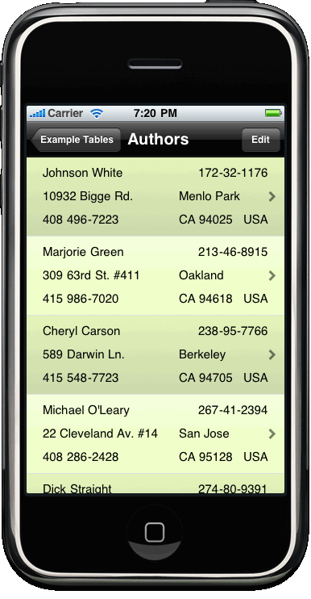

| Objcpp.h - Objective-C++ toolkit for iPhone SDK |
ObjSql.xcodeproj |  Author table records | Picture Editor | ObjXml.xcodeproj |
|
objcpp.h is a C++ header file which wraps pointers to instances of the
core foundation classes NSArray, NSDictionary and NSString in simple C++ classes
to facilitate the use of operator overloading. Once this has been done the
implementation of operators such as [] for arrays (and dictionaries) and
"+" for strings can be defined to extend the syntax of the Objective-C
language. As a convenient side effect, the assignment operator can also now be overloaded so objcpp.h can take the responsibility for managing reference counting and controlling object life-cycle off the programmer's hands in a manner arguably more consistent than the @property construct of Objective-C II and more memory efficient than the "autorelease" mechanism. objcpp.h is implemented entirely as inline functions within the header file and effectively operates as a pre-processor. Therefore, all that is required to use it is to add the files objcpp.h and the supporting file objstr.h to your project and #import "objcpp.h" into your source. The last step is to change the "File Type" for source files that import objcpp.h to "sourcecode.cpp.objcpp" on the "General" tab of the "Get Info" inspector in Xcode. This switches the compiler to mixed language "Objective-C++" compilation. You can then make use of the C++ wrapper classes OOArray, OODictionary and OOString much as you would their foundation counterparts except they have a number of handy operators available. For example, using OOString: #import "objcpp.h"
...
OOString str = @"Hello";
str = str + @" World";
NSLog( @"Message: %@, length %d == %d",
*str, [*str length], [str length] );
In objcpp the * operator is used to gain access to the Objective-C pointer wrapped by a class. As of gcc 4.2 (the default compiler in the iPhone 3.0 SDK), wrapped pointers can be messaged directly without using the * operator as a cast to type to the type "id" is available in the class. OOArray and OODictionary are C++ template classes that take the contained object's class as a parameter: OOArray<NSString *> array;
array[0] = @"First element";
array[1] = @"Second element";
array += @"Third element";
The OODictionary class is the same but you use an object for the
subscript which is used as the key. To cut a long story short, the way the three
core classes fit together, subscripting can be applied recursively, OOArrays can
be sparse and you can use OOString as the contained class so the following
compiles and executes correctly: OODictionary<OOString> dictionary;
dictionary[@"KEY"][1][@"KEY"] = @"Hello";
dictionary[@"KEY"][1][@"KEY"] += @" World!";
This recursive syntax is used in "objxml.h" when parsing and constructing XML messages. Also included with the OOString class are operators for regular expressions. For example: replacing any occurrences of the word "Hello" with "Good-bye" in a string... OOString text = @"Hello World";
text |= @"/Hello/Good-bye/";
This is the shortest of introductions to objcpp.h some details of which are described below. Other sources of information are the HTML documentation at the location above and the unit tests and example iPhone application in the release (as well as the source itself.) |
objsql.h is an Objective-C module which binds Objective-C classes
to a sqlite3 relational database for persistent storage.
Objects can be inserted, selected, updated and deleted by using messages. The binding of
the instance variables of record classes to database columns and creation of the
underlying database table is handled by the objsql.mm implementation - no SQL
knowledge is required. At the highest level, to use objsql.h: add it and the supporting files objcpp.h, objstr.h and objsql.mm to your project, create record classes and send one of the following messages to instances of your record classes: [record insert];
[record update]; // call before updating
[record delete];
To commit your changes to the database call [OODatabase commit] to
perform the actual updates. The record class can be any Objective-C
sublcass of the abstract superclass OORecord which implements these
insert/update/delete methods. The supported types for instance variables are:
OOArray<Pictures *> pics =
[Pictures selectRecordsRelatedTo:authorRecord];
OORef<Authors *> auth =
[Authors selectRecordsRelatedTo:*pics[0]][0];
Whether the join results in more than one record is not decided by the
framework but you can place a primary key or other constraints by
implementing one of the methods in the OOTableCustomization protocol in your class:
@implementation Author
+ (NSString *)ooTableName { return "AUTHOR_TABLE"; }
+ (NSString *)ooTableKey { return @"Author_ID";}
@end
The table associated with a record class and it's sqlite3 database
are created automatically when the class is first messaged. For more complex joins
or views involving, for example, aggregates use the customization method + ooTableSql to specify
the SQL to be used to create the view. It can then be selected into instances
of the record class as you would a from a table. Finally, any record instance can be bound user interface components using the following method: [record bindToView:uiView delegate:self];This statement uses the integer tag number of any subviews of uiView to determine the instance variable of the record class (the first instance variable having tag number 1) associated with that view. The view's ".text" property is then updated with the value of the instance variable. This can be used for UITableViewCells or for editors/inspectors which use the delegate methods of the UI components to determine when values have changed. For further details take a look at the "ObjSql" example project for the iPhone SDK. |
|
objxml.h is an extension of objcpp.h to parse and construct XML messages. The messages are represented to the developer as a tree of OONode objects, one for each XML element in the document. Each OONode is implemented a subclass of OODictionary<OOString> and contains the attributes of the element stored under the keys "@attributeName". Each OONode also has any child OONode sub-elements or OOString text in an array under the special key ".children". An incoming document is parsed using the constructor or by assignment from an NSData object containing the xml message text. NSData *text = [NSData dataWithContentsOfURL:aURL]; OONode doc( text, OOXMLRecursive ); // or doc = text; Components of the message are then accessed using a limited version of xpath syntax and casting: // retrieve attribute of root node OOString attr = doc[@"element/@attribute"]; // retrieve root node itself OONode root = doc[@"element"]; // retrieve array of all children of root OONodeArray children = doc[@"element/*"]; // retrieve all "item" elements in doc. // "OOXMLRecursive" option required OONodeArray items = doc[@"//item"];As it is a subclass of OODictionary<OOString> all xpath expressions return a string by default which is the text value of the element's contents. Casts are available however to return the actual nodes. You can explicitly convert the return value and following are valid and equivalent: OONodeArray nodes; OONode node; nodes = doc[@"element"].children(); nodes = doc[@"element/*"].nodes(); node = doc[@"element/child/0"]; node = doc[@"element/child"][0]; node = doc[@"element/child"].node(); node = doc[@"element/child"].node( 0 ); node = doc[@"element/child"].nodes()[0]; This process works in reverse to construct XML documents which can then be converted to message text using the writeXML() method. Constructing an XML document is as simple as: ONode doc; doc[@"element/message"] = @"Message text."; doc[@"element/@attr"] = "Attribute value"; doc[@"element/@xmlns"] = "http://namespaceurl"; NSData *message = &doc.writeXML( OXMLPrettyPrint ); |
Contents of the ReleaseThe release contains three Xcode projects for testing and to demonstrate the use of the toolkit. ObjCpp/ObjCpp.xcodeprojThis project contains the obj*.h file source and unit tests to validate the operation of the toolkit after it has been downloaded. Build and run the project to see the instructions on how to use objcpp.h in a project. ObjSql/ObjSql.xcodeprojObjSql is an example iPhone application that demonstrates the use of various features of the objsql.h component of the toolkit. ObjSql builds a small sqlite3 database from text flat files and displays them as a navigation based iPhone application. The records in the database are fetched into instances of the classes defined in RecordClasses.[hm]. These classes have common instance variable names that form natural joins amongst themselves in various ways which are detected by the toolkit as the classes are registered. The first screen displays a list of all tables and selecting one of the
tables displays row in that table. The cells of the UITableView are generated by
copying a prototype view for that record class and their values populated
automatically on the basis of the tag number of the UI component in the
prototype. Records can be deleted using the "Edit" button. ObjXml/ObjXml.xcodeprojThe ObjXml project exercises the objxml.h XML message parser displaying the top 100 new entries from the iTunes RSS feed. Data is fetched using code something like the following: OOXMLSaxParser parser( OXMLRecursive ); NSData * message = &OOURL( "http://url..." ).data(); parser.parse( message ): OONode doc = parser.rootNodeForXMLData(); Something different then happens. The items nodes are then selected out of the document as OODictionary<OOString> instances containing element values rather than OONodes using the ".dictionaries()" method. This allows the data to be imported onto instances of the "iTunesItem.[hm]" class using the OOMetaData class of the objsql.h toolkit and then automatically bound to UITableView cells using a prototype as in the ObjSql project. OOStringDictionaries items = doc[@"//items"].dictionaries(); OOArray<iTunesItem *> rows = [OOMetaData import:items intoClass:[iTunesItem class]]; // to then save to a sqlite3 database [OODatabase insertArray:rows]; [OODatabase commit]; |
Implementationobjcpp.h is based around a fourth core C++ class OOReference of which OOString, OOArray and OODictionary are subclasses. It is defined in general terms as follows: template <typename ObjectClass>
class OOReference {
ObjectClass *reference;
protected:
ObjectClass *set( ObjectClass *newReference ) {
[newReference retain];
[reference release];
return reference = newReference;
}
public:
OOReference() {
reference = nil;
}
ObjectClass *operator * () const {
return reference;
}
~OOReference() {
set( nil );
}
};
Using this class as it's base, the OOString class is defined as something like the following: class OOString : public OOReference<NSMutableString> {
public:
OOString &operator = ( const OOString &str ) {
set( *str );
return *this;
}
};
Using this basic pattern the semantics of the objcpp classes emerge. Each class
is a wrapper for a pointer to the underlying foundation class instance. On
assignment the new object is retained and any previous value for
"reference" is released. To gain access to the underlying object the
operator * is used. Finally, when a variable declared as OOString goes out
of scope, it's destructor is called and the reference is released by using the set() function to assign nil. The underlying object
may be dealloc'd as a result depending on it's reference count.It's worth digressing at this point to consider what happens when an OOString variable is defined as an instance variable of an Objective-C class. Since gcc 4.2 (the default in SDK 3.0+) the option "-fobjc-call-cxx-cdtors" is turned on by default. This option arranges for the constructors of instance variables which are C++ classes to be called when the containing Objective-C class's "alloc" method is called. Likewise when dealloc is called, the destructors of any C++ class instance variables are themselves called. This means, if you use OOString instead of NSString * for an instance variables it's memory will automatically be recovered when an object is deallocated avoiding the need to take care to define a "dealloc" method to recover any retained objects. |
SubscriptingThe implementation of subscripting in objcpp.h is a little more involved. If the goal was to have read-only access to containers OOArray could have been defined very simply as follows: template class OOArray<ElementClass>
class OOArray : OOReference<NSMutableArray> {
public:
OOString &operator = ( const OOArray &arr ) {
set( *arr );
return *this;
}
ElementClass *operator [] ( int idx ) {
return [**this objectAtIndex:idx];
}
};
To allow assignment to a subscripted expression however, the result of an
expressions array[i] needs to remember from where it was derived. To
capture this a transient private class OOSubscript is used to store this information.template class OOSubscript<ElementClass>
class OOSubscript {
NSMutableArray *arr;
int idx;
OOSubscript( NSMutableArray *arr, int idx ) {
this->arr = arr;
this->idx = idx;
}
friend class OOArray<ElementClass>;
public:
ElementClass *operator * () const {
return [arr objectAtIndex:idx];
}
OOSubscript &operator = ( ElementClass *elm ) {
[arr replaceObjectAtIndex:idx withObject:elm];
}
};
As a result the implementation of the operator [] for OOArray is more like the
following: OOSubscript<ElementClass> operator [] ( int idx ) {
return OOSubscript<ElementClass>( **this, idx );
}
In this way the code array[0] = @"A String"; is implemented. As before, the expression "array[i]" is an instance of a C++
wrapper class so you can use the "*" operator to gain access to it's
actual value. In objcpp.h there are four subclasses of OOSubscript. One
each for OOArrays and OODictionarys, for subscripts of OOArrays by an NSRange()
and one for subscripts of OODictionarys using a "slice" which is an
array of keys returning an array (each of which can be assigned to.)
|
CaveatsAs with any framework built on top of an existing one there are a few minor "gotchas" to look out for with using objcpp.h at the points where it meets conventional Objective-C programming. Mutabilityobjcpp.h does all it can to make sure its contained instances are mutable. Normally when an assignment is made, all that happens is that the pointer is copied and a "retain" message sent. If the assignment appears to be from an immutable object however (such as from NSString * rather than NSMutableString *) a "mutableCopy" is taken of the entire object and the copy is retained. Also, note that in effect all objcpp.h core classes are based on the mutable version of their foundation counterpart. If you want to make sure an argument passed by reference to a function is not changed by that function use the "const" qualifier, e.g. const OOString &str. Scope and Memory Managementobjcpp.h is perhaps a little too efficient at managing memory at times. Consider the following code: OOString greet( const OOString &who ) {
return OOString( @"Hello " )+who;
}
...
NSString *message = greet( @"World" );
NSLog( @"%@", message );
You will find it crashes. By the time the message is printed, the temporary OOString instance C++ created on the stack as the return value from function greet() has been destroyed and its containing string will have been released. For this situation the "&" operator has been overloaded in the OOReference class to return the underlying pointer with "autorelease" scope i.e.: operator & () { return [[ref retain] autorelease]; }
The following code will work and the message object will be preserved for
delayed release.
NSString *message = &greet();
NSLog( @"%@", message );
You can use this in any situation where you need to retain a contained object a
little longer. Think of the "*" operator as "object pointed to
by" and the "&" operator as "take a pointer to".
Assign of nil vs. capacity.Unfortunately in Objective-C "nil" is defined as simply "0" and it is impossible to distinguish it from integers when defining constructors. As it is useful to have a constructor for OOArray where you can specify the size of an array as well as one which initializes it to nil a compromise had to be found. As a result there is a shared constructor for integer arguments. If the value is zero it creates an empty OOArray reference. If the integer is non-null it will actually allocate an array with that initial capacity. As constructors are implemented using the assignment operators (to keep the two consistent) this applies to assignment as well. A necessary evil alas. If in doubt you could look at using the "~" operator to destroy a variable (or subscripted reference) rather than assign "nil". StringsYou will find that in many places you can use C-style "strings" as well as Objective-C style @"strings" work where an OOString is expected. This is due to there being a constructor to convert from one to the other. You may even find that there are places where C-style strings seem to work better than Obj-C style @strings. This is because the expression @"a string" has neither class NSString nor NSMutableString or even NCFString and as a result can lead to compilation errors due to ambiguous overloading. If you encounter problems use a C-Style "string" as it is less ambiguous. DebuggingWhile on the whole use of objcpp.h does not affect the Xcode environment the debugger "gdb" does not support inlined functions well when setting breakpoints and single stepping. In order to get around this: #define the preprocessor symbol "OODEBUG" in your source before objcpp.h is #imported or as a build parameter in Xcode and objcpp.h will be built without inlining functions. It can then be debugged as you would any other program. The last issue worth mentioning is that for some reason OOArrays and OODictionarys always display as being empty in the debugger. To work around this type "po array.ref" or po "dictionary.ref" at the console to view their contents. |
Common IdiomsHaving opened the door to operator overloading through the use of C++ the risk is great of descending into the depths of "operator oriented" programming where code is "write only" as is best exemplified by a language such as Perl which has an excessively rich syntax. There are a large number of operators defined in objcpp.h but used in moderation the common operators will not result in a reduction in the comprehensibility of code when compared to their at-times very verbose alternatives in Objective-C. Examples of common code idioms you might expect to use without compromising maintainability are given below:
// String concatenation (init from C-string is OK)
OOString string1 = @"Hello", string2 = "World";
OOString greeting = string1+" "+string2;
// subscript into string
unichar character2 = greeting[1];
greeting[1] = 'a';
// String comparison
if ( greeting == "Hallo World" )
// do something
// Pattern replace
greeting |= @"/Hallo/Good-bye/";
// Pattern match
OOStringArray words = greeting & @"\\w+";
// Split string dividing by separator
OOStringArray words = greeting / @" ";
// Join string back together (obscure)
OOString greeting = words / @" ";
// Sort an array
OOStringArray sorted = +words;
// destroy variable (assign to nil)
~greeting;
// Array initialization from C-string
OOArray<OOString> array1 = "1 2 3", array2 = "3 4 5";
// set operators (OOStringArray is a synonym)
OOStringArray union = array | array2;
OOStringArray intersection = array1 & array2;
// add to array
array1 += "4";
array1 += array2
// dictionary operators (can also init from C-string)
OODictionary<OOString> dict = "a 1 b 2 c 3";
dict[@"d"] = "Hello";
dict[@"d"] += " ";
// more efficient (*dict[@"d"] is an OOString object)
*dict[@"d"] += "World";
// delete dictionary key
~dict[@"d"];
// recursive subscripting (sparse arrays are padded out)
dict[@"e"][1] = "One";
dict[@"e"][2] = "Two";
/*** objsql.h examples ***/
// create and initialize record
Author *author = [[Author alloc] init];
author->Au_id = "123-456-789";
author->au_fname = "John";
author->au_lname = "Brown";
// insert into database
[author insert];
[OODatabase commit];
// update record
[author update]; // send before updating record
author->au_fname = "Jean";
[OODatabase commit];
[author release];
|